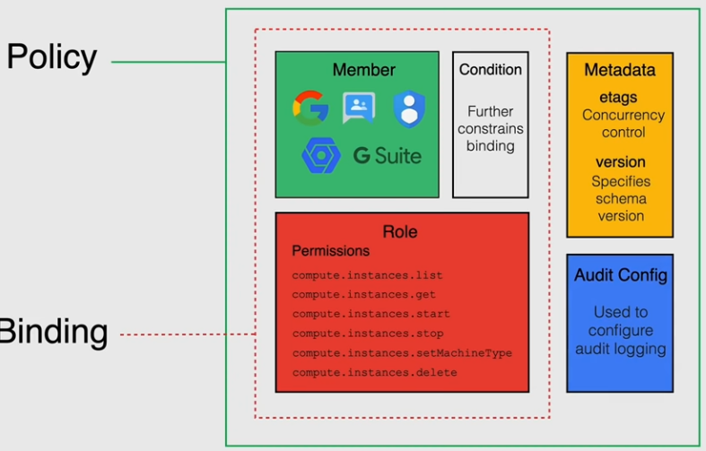

Policies are inherited; you can assign pooliceis at every level of the hierarchy. a policy is the union of the policy assigned to a resource + those inherited
ACCESS SCOPES are the legacy method to assign permission in google cloud